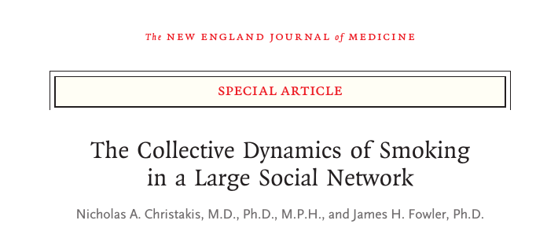
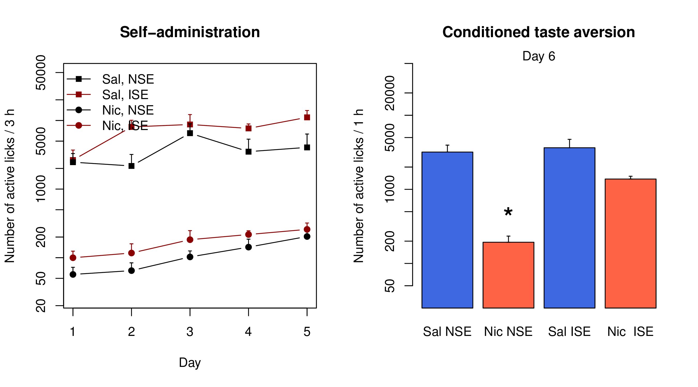
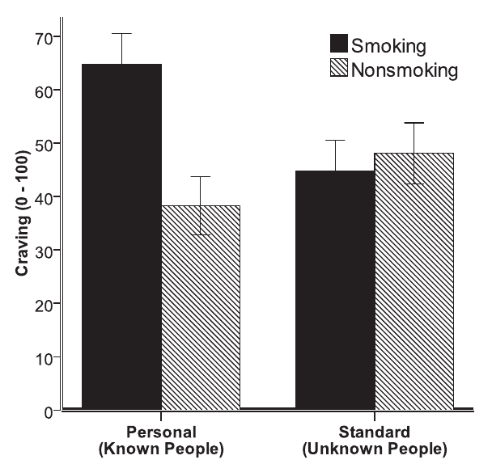

Project 2. Socially-acquired nicotine self-administration
Hao Chen
University of Tennessee Health Science Center
Rat GWAS retreat | University of Chicago | Oct 17 2015
Nicotine is primarily aversive in non-smokers

|

|
| Coughing, nausea, dizziness, sickness, burning throat, headache | Nicotine induces drug high only in significantly nicotine-deprived smokers. |
Nicotine self-administration with flavor cue


Flavor cue does not support nicotine self-administration

Chen, et al., 2011, Neuropsychopharmacology
Conditioned aversion to self-administered nicotine

Social environment influences smoking behavior


Chen, et al., 2011, Neuropsychopharmacology
Operant chamber setup

Social learning induces nicotine self-administration

Social learning induces nicotine self-administration
Chen, et al., 2011, Neuropsychopharmacology
Social learning reverses nicotine CTA
Nicotine self-administration with an aversive cue

NSE: Neutral social environment | ISE: Inducing social environment
Wang, et al., Under review.
Nicotine intake with appetitive vs aversive cues

Wang, et al., Under review
What is the social signal?
Olfactory but not gustatory cue is required


CS2 and flavor cue

Wang & Chen, 2014, PLoS ONE
Dose response to CS2

Wang & Chen, 2014, PLoS ONE
Craving induced by friends?
Conklin CA, et al. Nicotine Tob Res. 2013.
Social context-induced reinstatement
 Neutral social context
Neutral social context
 Inducing social context
Inducing social context
Context-induced reinstatement

Wang & Chen, 2014, PLoS ONE